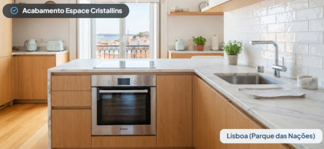
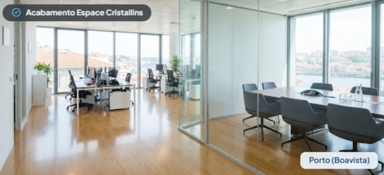

Desde 45 €
Limpeza de casas
Manutenção regular ou limpezas profundas completas com detalhe cristalino.
- Higienização profunda de cozinhas e WC
- Aspiração e desinfeção de superfícies
- Vidros, janelas e caixilharias
Qualidade · Confiança · Profissionalismo
A Espace Cristallins é especialista em limpeza de casas, empresas, escritórios e serviços de engomadoria. Espaços impecáveis com rigor, discrição e métodos ecológicos.


Resposta a orçamentos em 24h
Especialidades Espace Cristallins
Soluções integradas de higiene, conservação e engomadoria com padrão cristalino para habitações e empresas.
Desde 45 €
Manutenção regular ou limpezas profundas completas com detalhe cristalino.
Desde 60 €
Ambientes de trabalho higienizados para conforto e bem-estar da equipa.
Sob consulta
Clínicas, espaços comerciais, ginásios e sedes corporativas.
Especialidade
Serviço cuidado de passagem a ferro profissional para o dia a dia e têxteis-lar.
Desde 110 €
Remoção minuciosa de poeiras finas, tintas e resíduos de obra e remodelações.
Compromisso de excelência
Rigor profissional, discrição absoluta e a máxima atenção a cada pormenor do seu espaço.
Registo criminal, rigorosamente verificado, formação contínua e cobertura de seguro de responsabilidade civil.
Detergentes biodegradáveis com seleção ecológica e seguros para crianças e animais de estimação.
Se algum detalhe não estiver 100% cristalino, a equipa regressa sem qualquer custo adicional.
Adaptamo-nos à sua rotina familiar ou empresarial com pontualidade e rigor.

Resultado Espace Cristallins
Desengorduramento técnico de fornos, bancadas e pormenores de acabamento.

Resultado Espace Cristallins
Ar puro, vidros cristalinos e postos higienizados para receber clientes e colaboradores.
Simulação imediata
Preencha os dados em 2 minutos e receba uma proposta detalhada da Espace Cristallins, sem compromisso.